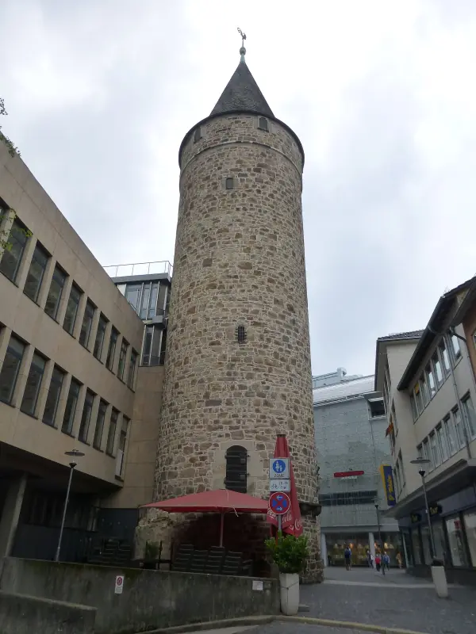
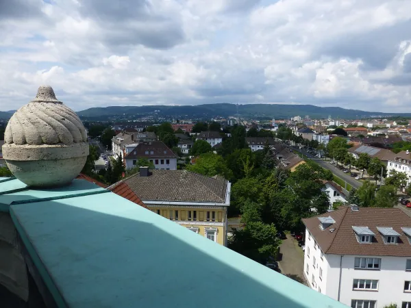
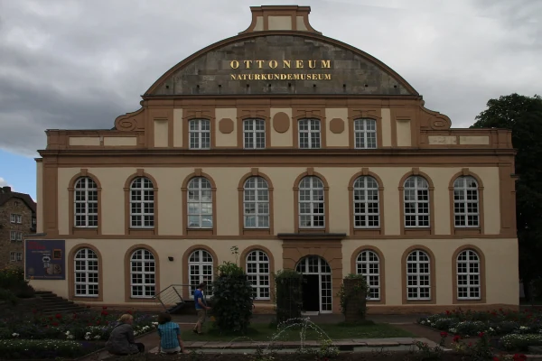

Start / Altstadt
Aaron Schiele
geprüft am
geprüft am
Warum hat Kassel kaum noch eine Altstadt?
In der Nacht vom 22. auf den 23. Oktober 1943 traf der schwerste Luftangriff die Stadt. Rund 80 Prozent der Gebäude wurden zerstört, darunter nahezu die gesamte Altstadt mit ihren Fachwerkhäusern, bis zu 10.000 Menschen kamen ums Leben. Beim Wiederaufbau entschied sich Kassel bewusst gegen eine Rekonstruktion und für moderne Architektur, nach einem Plan von 1951.
Darum wirkt die Innenstadt heute so, wie sie wirkt: breite Straßen, viel Fünfzigerjahre, dazwischen einzelne alte Steine. Ein Glanzstück dieser Zeit ist die Treppenstraße, am 9. November 1953 eingeweiht und eine der ersten Fußgängerzonen Deutschlands. Wer mit dem Blick für diese Schichten durch die Stadt geht, sieht sie mit anderen Augen.
Was ist von der Altstadt noch zu sehen?
- Martinskirche: die größte Kirche Kassels mit 1400 Plätzen und Bischofskirche der evangelischen Landeskirche. Im 14. Jahrhundert begonnen und 1462 geweiht, ihre beiden 73 Meter hohen Türme mit den blaugrünen Kupferhelmen siehst du von weitem. Drinnen lohnt das 12 Meter hohe Philippswandgrab, begonnen 1567. Die Fürstengruft öffnet nur nach Voranmeldung.
- Druselturm: 1415 zur Verstärkung der Stadtmauer gebaut, später Gefängnis mit tiefen Verliesen, Einlass nur durch ein rundes Loch, das „Astloch“. Ansehen kannst du ihn nur von außen. Achte an der Hedwigstraße auf das farbige Pflaster: Es zeigt, wo früher die Stadtmauer verlief.
- Zwehrenturm: ein gotischer Torturm von 1330 am Ende des Steinwegs. 1709 bekam er eine Sternwarte mit drehbarer Kuppel, heute gehört er als Ausstellungsfläche zum Fridericianum. Schau nach der bemalten Sonnenuhr.
- Brüderkirche und Renthof: die frühere Kirche der Karmeliter, nach dem Krieg in ihrer ursprünglichen Form wieder aufgebaut, heute Ort für Ausstellungen und Veranstaltungen. Im Renthof daneben stecken die Reste des Klosters, mit Renaissanceportal von 1617 und einem Brunnen aus der Zeit um 1600. Heute ist dort ein Hotel mit Restaurant und Bar.
- Altmarkt und Freiheit: die Freiheit führt vom Altmarkt am Marstall vorbei zur Martinskirche, 1330 von Landgraf Heinrich II. gegründet. Schon im 18. Jahrhundert ließ Landgraf Friedrich II. fast alle Fachwerkhäuser der Altstadt verputzen.
Wie sieht ein Rundgang durch die Altstadt aus?

Die Stationen liegen so dicht, dass du kaum Gehzeit brauchst. Ein Weg, der ohne Umwege durchkommt:
| Von | Nach | Zu Fuß |
|---|---|---|
| Zwehrenturm | Druselturm | rund 6 Min. |
| Druselturm | Martinskirche | rund 3 Min. |
| Martinskirche | Altmarkt | rund 5 Min. |
| Altmarkt | Renthof und Brüderkirche | rund 3 Min. |
| Renthof | Unterneustädter Kirchplatz | rund 7 Min. |
Zusammen sind das rund 25 Minuten reine Gehzeit. Start am Zwehrenturm ist praktisch, weil du vom Friedrichsplatz aus nur ein paar Schritte hast. Vom Bahnhof Wilhelmshöhe fahren die Trams 1, 3 und 4 dorthin.
Am Ende stehst du jenseits der Fulda in der Unterneustadt. Sie entstand Ende des 13. Jahrhunderts als ummauerter Brückenkopf und wurde 1943 ebenfalls fast völlig zerstört. Seit 1994 wird sie unter dem Motto „Stadt am Fluss“ neu gebaut, auf dem alten Grundriss, aber mit heutigen Häusern. Hier lässt sich gut sehen, wie anders Kassel heute mit der Lücke umgeht als in den Fünfzigern.
Wo esse und kaufe ich in der Altstadt?
In der Markthalle im alten Marstall am Altmarkt, donnerstags und freitags von 7 bis 18 Uhr und samstags von 7 bis 14 Uhr. Regionale Händler verkaufen dort, was Nordhessen ausmacht, zum Beispiel Ahle Wurscht. Am Donnerstag- und Samstagvormittag ist zusätzlich Wochenmarkt. Wer den Rundgang auf einen dieser Tage legt, verbindet beides.
Wo erfahre ich mehr über das alte Kassel?
Im Stadtmuseum am Ständeplatz, rund 10 Minuten zu Fuß vom Zwehrenturm. Es erzählt die Geschichte der Stadt und ist stufenfrei. Geöffnet dienstags und donnerstags bis sonntags von 10 bis 17 Uhr, mittwochs bis 20 Uhr, montags geschlossen. Eintritt 4 Euro, ermäßigt 3 Euro, unter 18 Jahren frei. Seit dem 31. Oktober 2026 läuft dort die Sonderausstellung „Unterwegs. Mobilität und Verkehr in Kassel“.
Für Gruppen bietet Kassel Marketing einen Stadtrundgang durch die Innenstadt an: 1,5 Stunden, bis zu 20 Personen, 110 Euro je Gruppe. An einem Regentag passt das Museum gut zu den Tipps für Kassel bei Regen.
Häufige Fragen
Hat Kassel eine Altstadt?
Nur noch in Resten. Die Fachwerk-Altstadt wurde in der Nacht vom 22. auf den 23. Oktober 1943 fast vollständig zerstört und nicht rekonstruiert. Erhalten sind unter anderem Martinskirche, Druselturm, Zwehrenturm und Brüderkirche.
Wo ist die Altstadt in Kassel?
Rund um Martinskirche, Altmarkt und Freiheit, wenige Gehminuten vom Friedrichsplatz. Am anderen Ufer der Fulda liegt die Unterneustadt.
Wie lange dauert ein Rundgang durch die Kasseler Altstadt?
Die reine Gehzeit zwischen den Stationen liegt bei rund 25 Minuten. Mit Kirche, Fotos und einem Halt in der Markthalle bist du eine bis zwei Stunden unterwegs.
Kann man den Druselturm besichtigen?
Nein, nur von außen. Der Turm von 1415 war Teil der Stadtmauer und diente später als Gefängnis.
Wie hoch sind die Türme der Martinskirche?
Rund 73 Meter. Ihre heutige Form mit den blaugrünen Kupferhelmen bekamen sie nach dem Zweiten Weltkrieg.
Wo parke ich für die Altstadt?
Direkt an der Martinskirche liegt ein Parkhaus mit 113 Plätzen. Größer ist die Tiefgarage Friedrichsplatz mit 980 Plätzen.
Quellen abgerufen am 20.10.2026
- Stadt Kassel Zerstörung Kassels · Martinskirche · Druselturm · Zwehrenturm · Brüderkirche · Renthof · Altmarkt und Freiheit · Unterneustadt · Treppenstraße · Stadtmuseum · Stadtrundgang Kunst und Kultur
- Kasseler Markthalle Kasseler Markthalle
- Visit Kassel Druselturm
- Wikipedia Kassel
- OpenStreetMap-Routing Fußwege
Weiterlesen

Kassel Sehenswürdigkeiten und Ausflugsziele im Überblick
Kassel Sehenswürdigkeiten im Überblick: Bergpark mit Herkules und Schloss, Innenstadt mit Fridericianum, Karlsaue und Grimmwelt, mit Eintritt und Zeiten.
Weiterlesen
Kassel bei Regen
Kassel bei Regen: Schloss Wilhelmshöhe, Grimmwelt, Naturkundemuseum, Landesmuseum, Planetarium und Kurhessen-Therme mit Öffnungszeiten und Preisen.
Weiterlesen
Kassel am Wochenende
Kassel am Wochenende: Samstag Innenstadt mit Markthalle, Fridericianum und Grimmwelt, Sonntag Bergpark mit Herkules und Schloss, mit Wegen und Zeiten.
Weiterlesen